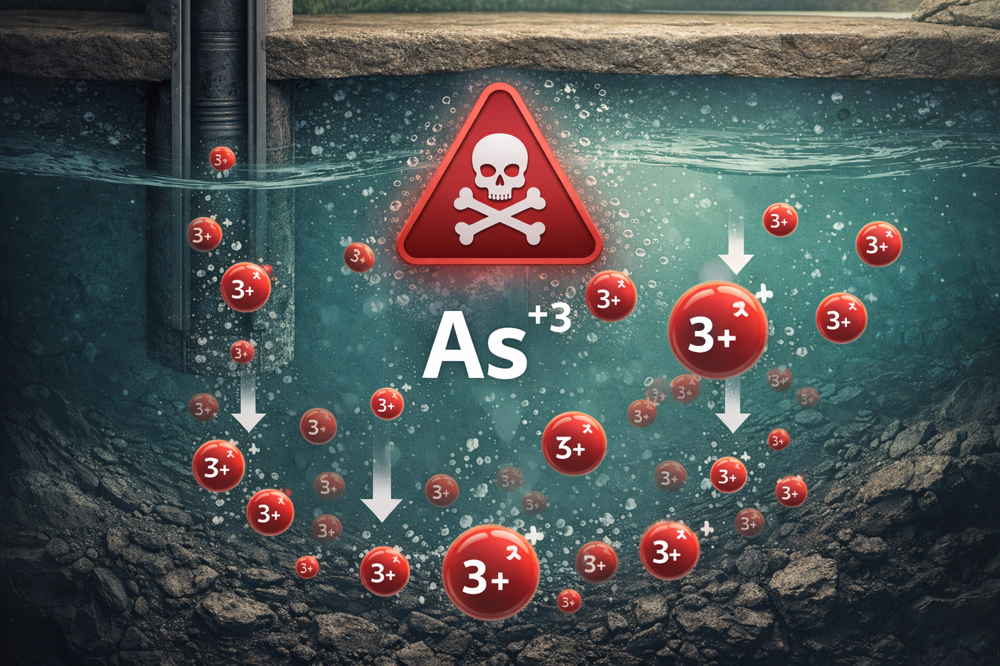
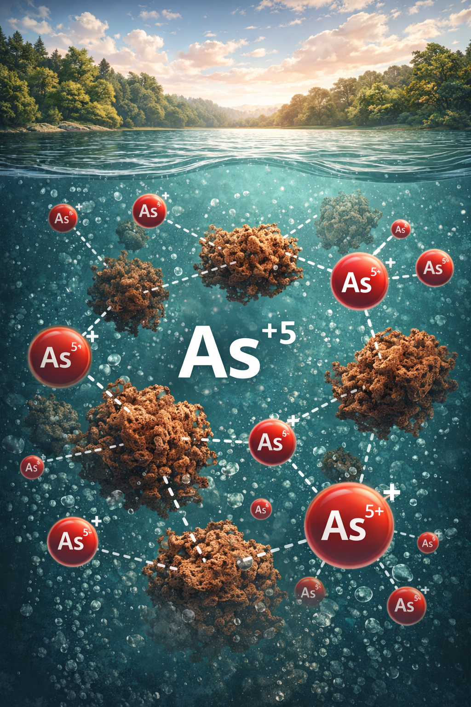
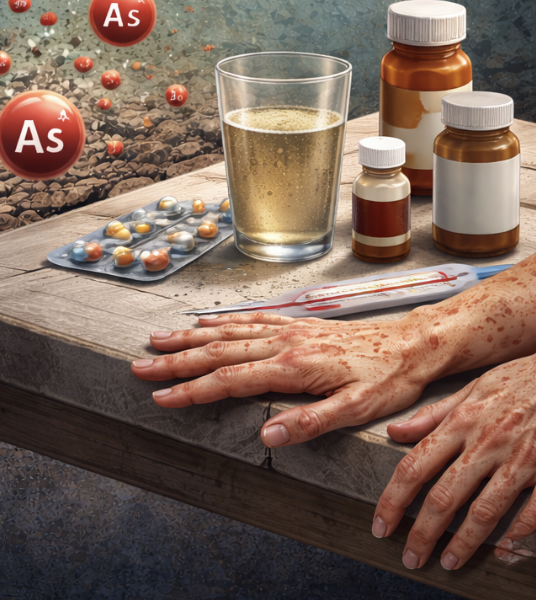

Solution
In Argentina, access to safe water faces a challenge that does not stem from industrial activity, but from the earth itself. That is why we propose this "problem-solving" solution with the aim of improving the lives of many communities.
INTRODUCTION AND PROBLEM STATEMENT
Arsenic in Argentine Aquifers
REDUCED FORM
Arsenite — As⁺³
- Present in deep wells and anoxic groundwater
- Requires pre-oxidation before treatment
- More toxic and difficult to remove directly

OXIDIZED FORM
Arsenate — As⁺⁵
- Present in oxygenated surface waters
- Adheres efficiently to iron flocs
- Reference form for coagulation treatment

HEALTH RISK
Chronic Endemic Hydroarsenicism
- Affects regions of the Argentine Pampas plains
- Caused by chronic consumption of contaminated water

MAXIMUM PERMISSIBLE LIMIT ⚠️
The Argentine Food Code and the World Health Organization establish a maximum concentration limit for arsenic in drinking water.
Maximum allowed: 0.01 mg/L of As
FUNCTIONAL PROCESS MAP
Chemical Oxidation-Assisted Coagulation-Flocculation
Our solution is based on a Chemical Oxidation-Assisted Coagulation-Flocculation process. This method ensures that arsenic, which is naturally dissolved in the water, is transformed into solid particles that can be physically removed in just four steps.
STEP 1: Aeration and Chemical Reaction
The process begins by oxygenating the raw well water through a "shower" effect to prepare the arsenic for removal. Once the water is in the reaction vessel, a small amount of iron and a chlorine-based oxidant (common bleach) are added. An Arduino-controlled Servo Motor then manages the agitation: a brief period of rapid mixing distributes the reagents, followed by a slower "flocculation" phase where the arsenic binds to the iron, forming visible clusters known as flocs.
STEP 2: Sedimentation by Gravity
To separate the contaminants from the water, the system enters a programmed 15-minute rest period. During this time, gravity pulls the heavy arsenic-laden flocs to the bottom of the container. This stage is crucial for ensuring that the majority of the concentrated pollutants are left behind as a sediment layer, allowing only the clarified water from the top to proceed to the next phase.
STEP 3: Filtration
The pre-treated water is then directed through a filtration column made from a recycled PET bottle. This column contains graduated layers of fine sand and gravel. As the water percolates through the sand, it acts as a microscopic sieve, capturing any remaining particles or small flocs that did not settle during the sedimentation stage. The gravel at the base provides structural support and ensures a steady, unobstructed flow.
STEP 4: Final filtration
In the final stage, the water passes through a polishing cartridge containing fine textile and activated carbon. This serves as a secondary safety barrier to ensure the highest possible water quality. While the textile traps the finest suspended solids, the activated carbon removes residual chlorine odors and improves the overall taste. The result is crystal-clear water that is significantly safer for use.